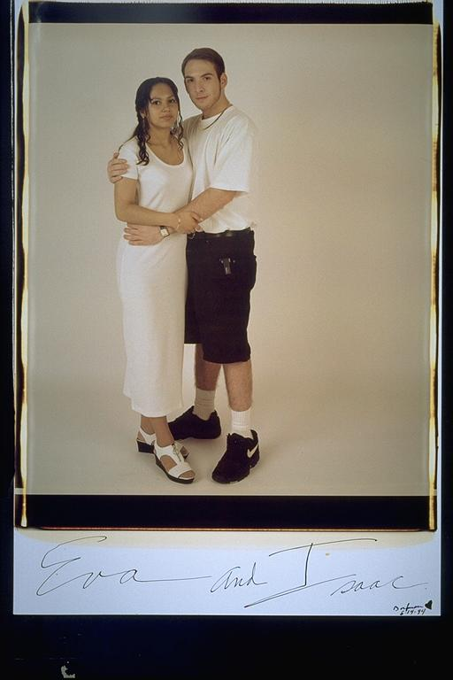

Pals: Boys Who Grew Up Together
elsadorfman.com/pals
Aldo: This was Isaac's first serious girlfriend and I'm sure he thought that he was going to marry her. In fact, I'm sure of it. He went to high school with her and is probably still in contact. I'm sure it taught him a lot. Like, no matter what side you're on, be careful of the opposite sex -- or don't be, it'll be tough either way.

elsad@comcast.net